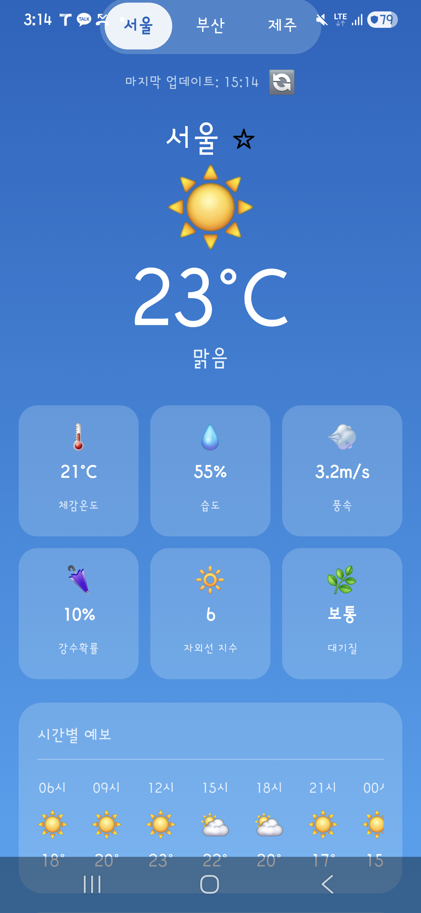
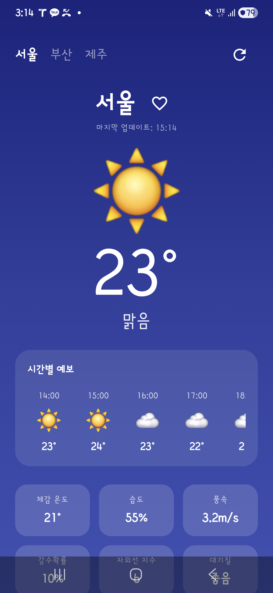

AI CODING TOOL COMPARISON · V2
WeatherNow v2 기능 개선 비교
v1 결과물을 기준으로 동일한 개선 프롬프트를 적용해 기능 추가, 코드 이해력, 안정성을 비교한 결과입니다.
01
실험 개요
v1 결과물을 기준으로 동일한 개선 프롬프트를 적용해 기능 추가, 코드 이해력, 안정성을 비교한 결과입니다.
가장 빠른 실행
Gemini · 149.4초
최저 토큰
Gemini · 642,641
최대 코드량
Codex · 736줄
02
종합 비교
| 항목 | Claude | Codex | Gemini |
|---|---|---|---|
| 모델 | claude-sonnet-4-6 (Claude Code CLI v2.1.153) | gpt-5.5 (OpenAI Codex CLI v0.134.0) | gemini-3.1-flash-lite + gemini-3-flash (Gemini CLI v0.43.0) |
| 소요 시간 | 360.6초 | 315초 | 149.4초 |
| 총 사용 토큰 | 1,043,992 | 1,615,940 | 642,641 |
| Kotlin 파일/라인 | 5개 / 580줄 | 6개 / 736줄 | 5개 / 518줄 |
| 빌드 | 성공 | 성공 | 성공 |
| 스크린샷 | 성공 | 성공 | 성공 |
| 요구사항 충족 | 6/6 | 6/6 | 6/6 |
| v1 대비 변경 파일 | 3개 | 6개 | 4개 |
| UI 테마 | 밝은 블루 그라디언트, v1 감성 유지 | 다크 네이비 대시보드 | 블루 그라디언트, 모바일 앱 액션 중심 |
03
요구사항 체크
- 기존 프로젝트를 새로 만들지 않고 개선
- 한국어 깨짐 수정
- 시간별 예보 추가
- 강수확률/자외선/대기질 추가
- 새로고침/마지막 업데이트/loading 상태 추가
- 즐겨찾기 상태 추가
- 빌드 및 실제 기기 스크린샷 성공
- 토큰 사용량과 소요 시간 비교
| 항목 | Claude | Codex | Gemini |
|---|---|---|---|
| 한국어 복구 | 충족 | 충족 | 충족 |
| 시간별 예보 | 충족 | 충족 | 충족 |
| 상세 날씨 | 충족 | 충족 | 충족 |
| 새로고침 | 충족 | 충족 | 충족 |
| 즐겨찾기 | 충족 | 충족 | 충족 |
| 5일 예보 보존 | 충족 | 충족 | 충족 |
04
토큰 사용량
Claudeclaude-sonnet-4-6 (Claude Code CLI v2.1.153)
총 사용 토큰1,043,992
신규 입력 토큰24
캐시 생성 토큰39,214
캐시 재사용 토큰979,789
출력 토큰24,965
보조 모델 토큰1,303
예상 비용$0.8169
Claude CLI 사용량 기준. 캐시 생성/재사용 토큰을 분리했고, 보조 모델 사용량은 별도 항목으로 표시했습니다.
Codexgpt-5.5 (OpenAI Codex CLI v0.134.0)
총 사용 토큰1,615,940
입력 토큰1,604,558
캐시 입력 토큰1,406,720
출력 토큰11,382
추론 출력 토큰1,063
Codex CLI 사용량 기준. 입력 토큰에는 캐시 입력 토큰이 포함되어 있어 별도 항목으로 함께 표시했습니다.
Geminigemini-3.1-flash-lite + gemini-3-flash (Gemini CLI v0.43.0)
총 사용 토큰642,641
gemini-3.1-flash-lite 사용 토큰4,419
gemini-3-flash-preview 사용 토큰638,222
Gemini CLI 통계 기준. 보조 모델과 본 작업 모델 사용량을 합산했습니다.
05
실행 화면
Claude

Codex

Gemini

06
구현 관찰
| AI | UI 테마 | 주요 기능 | 관찰 |
|---|---|---|---|
| Claude | 밝은 블루 그라디언트, v1 감성 유지 | 시간별 예보, 상세 날씨 카드, 새로고침/마지막 업데이트, 즐겨찾기 | v1의 시각 정체성을 가장 많이 유지. 하단 시간별 예보가 내비게이션 바와 일부 겹침 |
| Codex | 다크 네이비 대시보드 | 시간별 예보, 상세 날씨, 새로고침, 즐겨찾기 | 정보 구조와 컴포넌트 분리가 가장 명확. v1 대비 디자인 변화 폭은 큼 |
| Gemini | 블루 그라디언트, 모바일 앱 액션 중심 | 시간별 예보, 상세 날씨 카드, 새로고침 아이콘, 즐겨찾기 하트 | 상단 액션 배치가 직관적. 하단 시간별 예보가 내비게이션 바와 일부 겹침 |
07
코드 요약
| AI | Kotlin 파일 | Kotlin 라인 | 변경 파일 |
|---|---|---|---|
| Claude | 5개 | 580줄 | 3개 |
| Codex | 6개 | 736줄 | 6개 |
| Gemini | 5개 | 518줄 | 4개 |
Claude diff
.../com/example/weathernow/data/WeatherData.kt | 48 +++- .../com/example/weathernow/ui/WeatherScreen.kt | 263 +++++++++++++++------ .../weathernow/viewmodel/WeatherViewModel.kt | 40 +++- 3 files changed, 268 insertions(+), 83 deletions(-)
Codex diff
.../java/com/example/weathernow/MainActivity.kt | 4 +- .../java/com/example/weathernow/WeatherData.kt | 91 ++++-- .../com/example/weathernow/WeatherViewModel.kt | 58 +++- .../com/example/weathernow/ui/WeatherScreen.kt | 328 ++++++++++++++++----- .../weathernow/ui/components/ForecastRow.kt | 10 +- .../example/weathernow/ui/components/MetricTile.kt | 6 +- 6 files changed, 391 insertions(+), 106 deletions(-)
Gemini diff
.../java/com/example/weathernow/WeatherData.kt | 45 ++++- .../com/example/weathernow/WeatherViewModel.kt | 49 +++++- .../com/example/weathernow/ui/WeatherScreen.kt | 185 ++++++++++++++------- .../weathernow/ui/components/WeatherComponents.kt | 93 ++++++++--- 4 files changed, 293 insertions(+), 79 deletions(-)